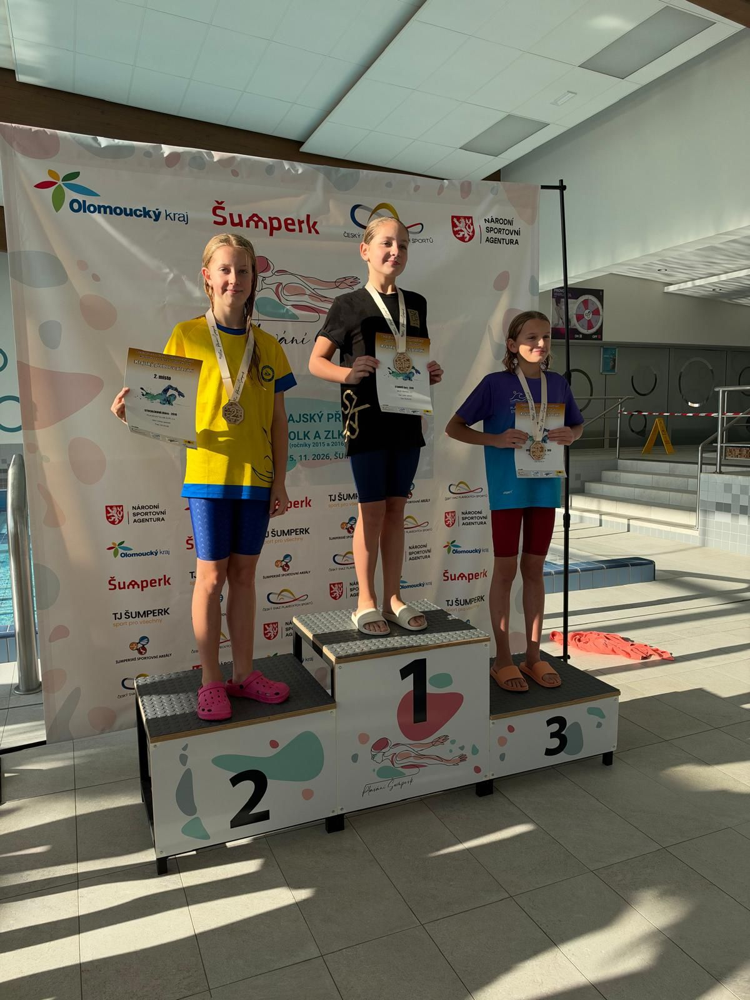
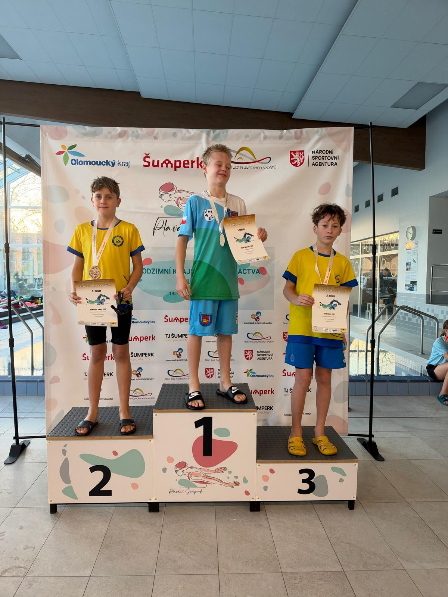
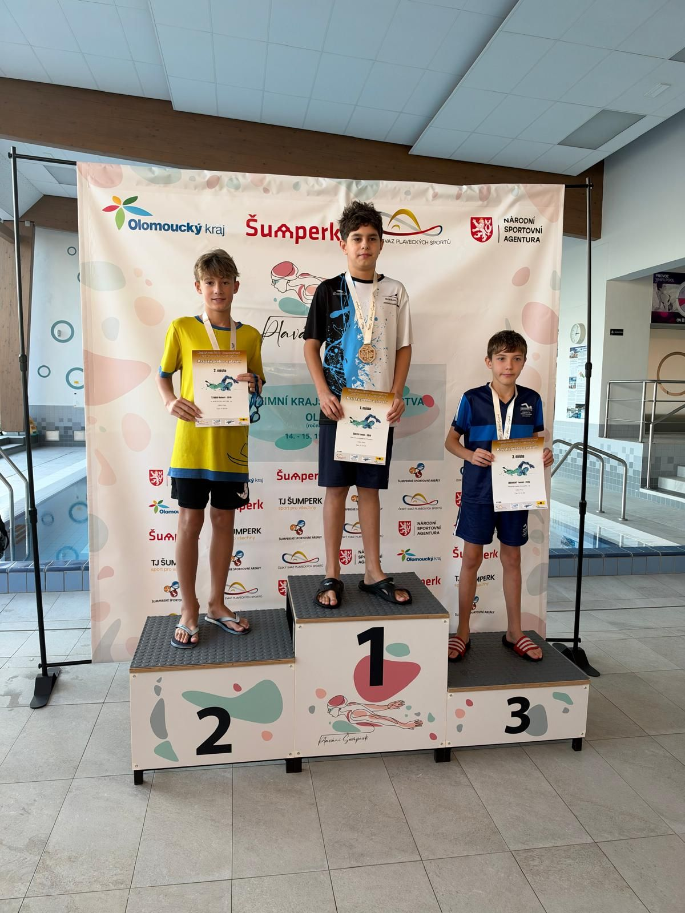
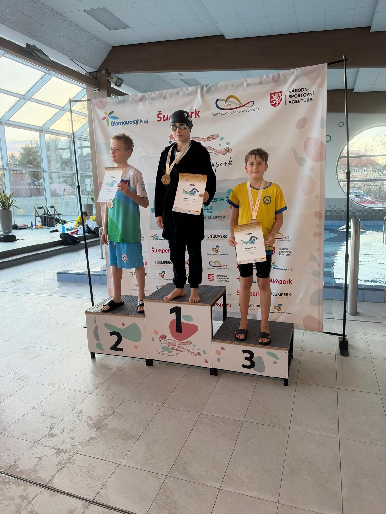
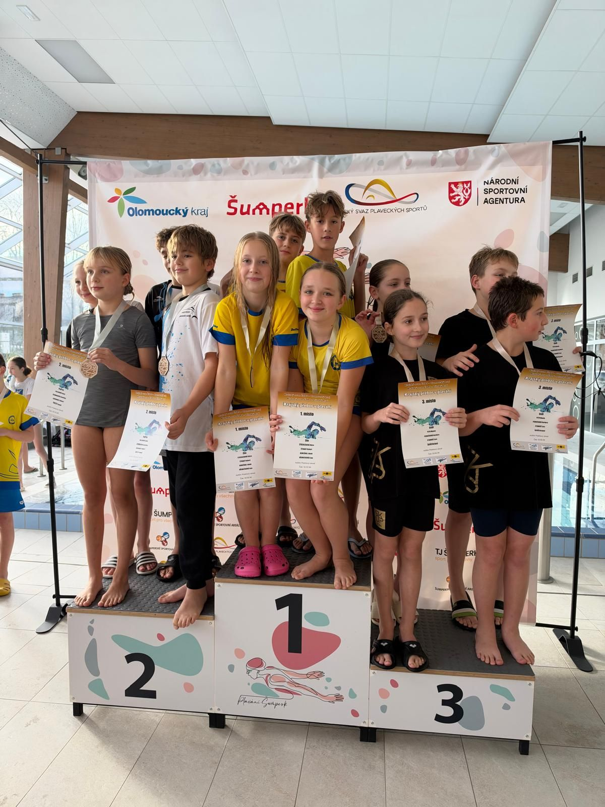
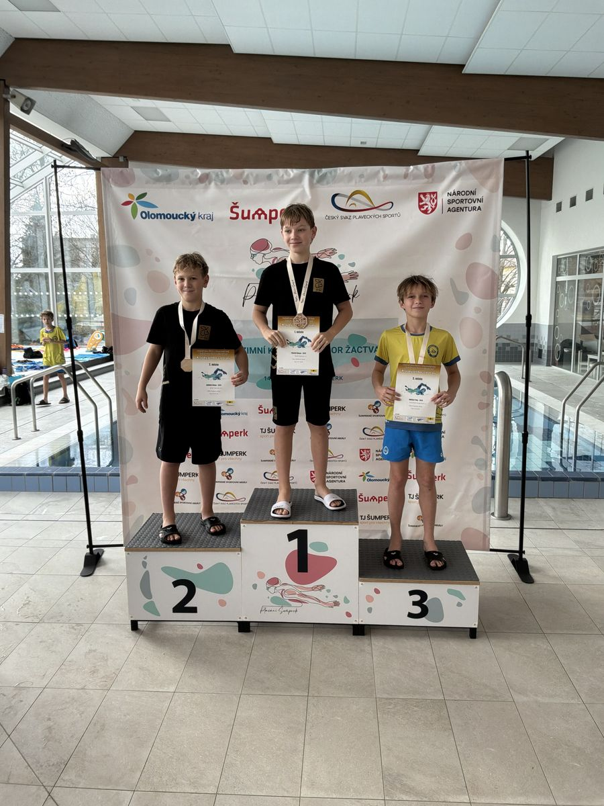
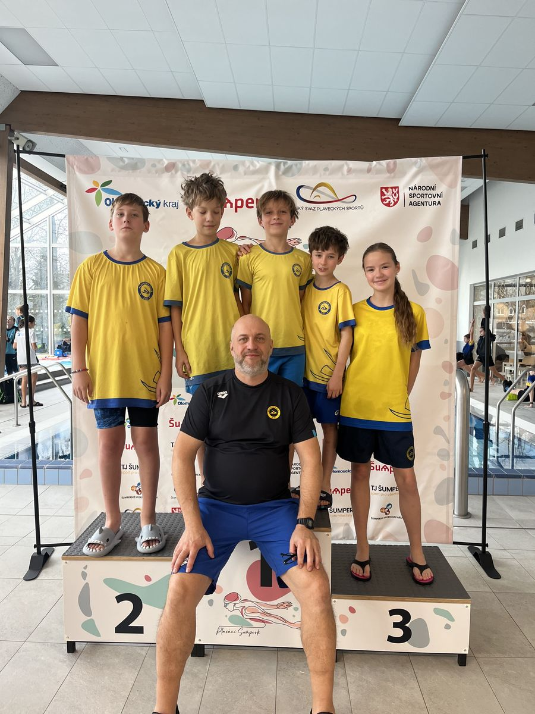

Krajský přebor 10 a 11letého žactva, Šumperk
O víkendu 14. a 15. 11. 2026 startovalo za klub 23 mladších žáků a žaček ročníků 2016 a 2015.
Naši mladí plavci ročníků 2016 a 2015 se zúčastnili podzimního krajského přeboru OLK a ZLK 10 až 11letého žactva.
Medaile ročníku 2016
- Jakub Nemeškal 1. místo, 2× 2. místo, 2× 3. místo, štafeta 2× 1. místo
- Klára Stuchlíková 6× 2. místo, štafeta 2× 1. místo
- Jakub Čech 1. místo, 3. místo, štafeta 1. místo
- Robert Štrauf 2× 2. místo, štafeta 1. místo
- Ema Křemečková štafeta 2× 1. místo
Ročník 2015
Nejúspěšnějším členem výpravy se stal Filip Knedla se čtyřmi medailemi. Zlato získal na 200 m prsa (03:13,71), 100 m prsa (01:33,53) a 200 m polohový závod (02:58,27), bronz na 100 m polohový závod (01:23,22).
Karolina Vičíková získala stříbro na 200 m znak (02:50,99) a na 200 m polohový závod skončila těsně čtvrtá. Marek Kluzák doplaval čtvrtý na 200 m znak a Tomáš Holec se třikrát probojoval do nejlepší desítky.
Osobní rekordy si zaplavali také Kristýna Štachová, Jan Beneš, David Hrdlička, Jan Kopeček, Kamila Krejčíková, Filip Lysák, Elena Markytánová, Nina Otáhalová, Tobias Robin Trecha, Adam Vápeník, Jakub Večeřa, Tomáš Vyoral a Jan Zaoral.
Všem zúčastněným blahopřejeme.

Fotky ze závodu






